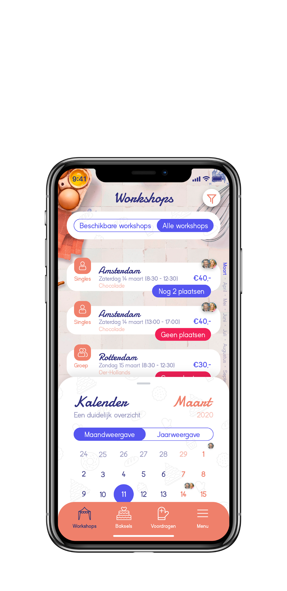

Heel Holland Bakt
Een begeleidende app voor het vinden van- en deelnemen aan workshops en voor het indienen en beoordelen van baksels.
De applicatie is gericht op kijkers van Heel Holland Bakt van omroep Max. Ik heb ervoor gekozen om een native app te ontwerpen voor IOS en heb dat dan ook gedaan a.d.h.v. de IOS guidelines. De applicatie moet ervoor zorgen om de band tussen de fans en Heel Holland Bakt gedurende het “droge” seizoen in stand te houden.
Navigeren kan worden gedaan via de tabbar, zo blijft het overzicht behouden. Ik heb ervoor gekozen om geen home-pagina te maken. Zonder deze pagina blijft de app naar mijn mening overzichtelijker met zo min mogelijk schermen. De app opent automatisch de pagina waar je de app verliet, maar dit is te wijzigen in de instellingen.
Inloggen is niet noodzakelijk voor de meeste functies, echter als je bijvoorbeeld workshops wilt volgen, is het wel noodzakelijk om in te loggen. De pagina “Actieve workshops” is dan ook beschikbaar (indien ingeschreven voor een workshop).
- 